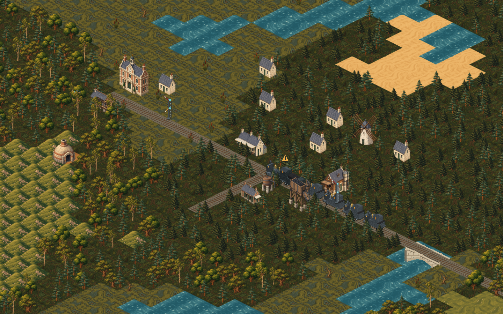

Higher-resolution source artwork, soft edges and world-space sizing. Use the tabs to compare the previous import with the new in-game scene. The original images remain unchanged.

The scenery conversion is playable. Trains need proper multi-view, separately layered art before they can match these illustrations while turning correctly. Their working procedural sprites are retained; copying one picture to every angle is not used.
Implementation and remaining art work · Source/frame mappings · Runtime checks · Railcraft requirements